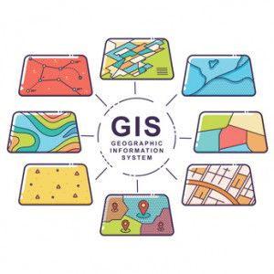

Understanding Geospatial Data with R: A Comprehensive Guide
Geospatial data is a fundamental component of many data science projects, offering valuable insights into patterns, relationships, and trends based on geographical locations. In this blog post, we will explore the basics of understanding geospatial data using R, a powerful statistical programming language. We’ll cover essential concepts, data types, and practical examples to help you grasp the intricacies of working with spatial information.
Introduction to Geospatial Data
Geospatial data comes in various forms, such as points, lines, and polygons, each representing different aspects of the Earth’s surface. The most common file formats for storing geospatial data are GeoJSON and Shapefiles.

Loading Geospatial Data in R
In R, the sf package is widely used for handling geospatial data. Let’s start by loading a Shapefile containing information about city boundaries.
# Install and load required packages
install.packages("sf")
library(sf)
# Load geospatial data
cities <- st_read("path/to/cities.shp")This code snippet assumes you have a Shapefile named cities.shp in your working directory. The st_read function from the sf package is used to read the Shapefile and create a spatial data frame.
Exploring Geospatial Data
Once the data is loaded, let’s explore its structure and attributes.
# Display summary of the spatial data
summary(cities)This will provide an overview of the spatial data, including the geometry type (point, line, or polygon), bounding box, and attribute data.
Geospatial Data Visualization
Visualization is crucial for understanding geospatial patterns. We’ll use the ggplot2 package for creating basic maps.
# Install and load ggplot2
install.packages("ggplot2")
library(ggplot2)
# Plotting the cities on a map
ggplot() +
geom_sf(data = cities) +
ggtitle("Cities Map")Here, geom_sf is used to plot the spatial features on a map. Customize the plot further by adding layers, adjusting colors, and incorporating additional geospatial data.
Spatial Queries and Analysis
Performing spatial queries allows us to extract meaningful information from geospatial data. Let’s say we want to find cities within a specific region.
# Define a bounding box for the region
bbox <- st_bbox(c(xmin, ymin, xmax, ymax), crs = st_crs(cities))
# Extract cities within the bounding box
cities_in_region <- cities[st_within(cities, st_as_sfc(bbox)), ]Here, st_within is used to filter cities that fall within the specified bounding box.
Basic Geospatial Statistics
Understanding the spatial distribution of data is crucial. Let’s explore basic spatial statistics using the spdep package.
# Install and load spdep
install.packages("spdep")
library(spdep)
# Spatial autocorrelation analysis
moran <- moran.test(cities$population, listw = poly2nb(st_as_sfc(cities)))
print(moran)This example conducts a Moran’s I test to assess spatial autocorrelation in the population data.
Conclusion
This blog post has provided a foundational understanding of geospatial data in R. We covered loading data, visualization, spatial queries, and basic statistics. As you delve deeper into geospatial analysis, you’ll find R to be a versatile and powerful tool for unlocking valuable insights from spatial datasets.
In the next parts of this series, we will explore advanced topics such as spatial regression, machine learning with geospatial data, and building interactive web maps. Stay tuned for more insights into the fascinating world of spatial analytics with R!